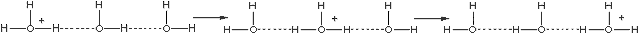
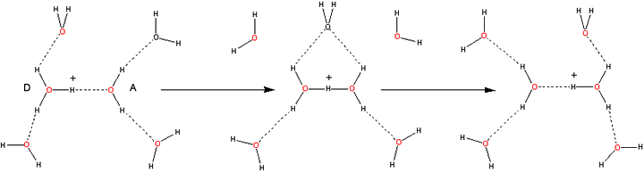
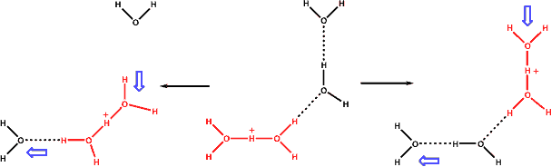
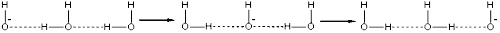
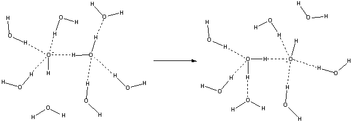

Theodor Grotthuss
The Grotthuss mechanism describes the way protons rapidly move through liquid water.
 pH
pH
 Hydrogen ions
Hydrogen ions
 Hydroxide ions
Hydroxide ions
The widespread belief is that protons and hydroxide ions rapidly diffuse in liquid water [102], with protons diffusing almost twice as fast as hydroxide ions, over four times as fast as water molecules and seven times as fast as Na+ ions. However, it should be recognized that these diffusivities are determined from movement in an electric field (at 100 V m−1; H+ and OH− have mobilities of 36.23 and 20.64 μm s−1 respectively at 298 K) a [2116], where the special mechanisms described below are operational. The true diffusive movements of the ions may be somewhat reduced as they are attached to their attendant hydrogen-bonded water molecules and accompanied by their counter-ions. This can be recognized by the proton diffusional limitations on the surface of some immobilized enzymes [103].
The Grotthuss mechanism (origin in [160]), whereby protons tunnel from one water molecule to the next b via hydrogen-bonding, is the usual mechanism given for facilitated proton mobility (see also an alternative mechanism below). The process is similar to auto-dissociation, with the mechanism causing the ions (H+, OH−) to separate initially. Both processes increase with increasing temperature [1041].
Grotthuss proton transfer

Ab initio molecular dynamics simulations indicate an increased probability for the proton to revert back to its previous location rather than to continue, suggesting that the timescale of the movement between water molecules is significantly shorter than if the continuing transfer was random [3232]. Density-functional theory-based molecular dynamics show that structural diffusion of hydronium occurs over chains of several water molecules in multiple hopping events [3225, 3245] (see trimer ion figure). It is noteworthy that this process, although faster than translational diffusion, proves to be much slower than might be expected from its mechanism. This relative sluggishness may be due to the rotation of molecules required for trains of sequential proton movement (see below) and the consequential necessity for the breakage of hydrogen bonds. The strange effect of degassing increasing proton diffusion over ten-fold, however, indicates that the nonpolar dissolved gas molecules, naturally present, disrupt the linear chains of water molecules necessary for the Grotthuss mechanism and so slow the proton movement [711]. Over short hydrogen-bonded water wires, there can be a correlated movement of protons due to quantum fluctuations [2025] and extremely rapid transit through the existing suitably hydrogen-bonded water 'wires' [2026]. However, after a proton has moved along a chain of water molecules (in effect if not in body, by the excess proton disappearing at one end and appearing at the other end), further proton movement requires a reorientation of the hydrogen-bonding, if proton tunneling is to continue through the same molecules and in the same direction. This extended timescale motion has been examined, with the rate-determining step for excess proton transfer being found to be the hydrogen bond cleavage step [3072].
In order to migrate, the ions must be associated with hydrogen-bonded clusters; the stronger and more extensive the cluster, the faster the migration. Stronger hydrogen-bonding causes the O···O distance to be shorter, so easing the close approach required for transfer. Proton transfer is enhanced when shorter hydrogen bonds are formed to the acceptor water molecule (A below), and longer hydrogen bonds are formed to the donor water molecule (D below) [2152]. A limiting factor in the mobility of both ions is the breakage of an outer shell hydrogen bonds. This enables the proton to transfer from H3O+ [102] and involves the additional energy requirements of stretching the outer hydrogen bonds due to the contraction of the O···O distance.
Hydroxonium ion transport mechanism

Ultrafast 2D-IR spectroscopy shows the Zundel ion to be relatively long-lived (> 480 fs) and not just a fleeting transition state during proton movement [2440]. The triangular arrangement of water molecules [1488] formed during proton transfer has also been found in the protonated trimer (H7O3+, [138]) and necessarily involves a rotation around the hydrogen bond as the 'Zundel' dihydronium (H5O2+) ion flattens from its normal tetrahedral structure. The presence of the fourth water molecule associated with the H9O4+ cluster (shown above the charge above) is seen in a neutron diffraction study as oriented but distant (3.2 Å, [697]). Proton transport may also occur using 'Zundel' dihydronium (H5O2+) ions only, as below [490], which involves the concerted movement of two molecules. Such proton jumps may be short (shown on the left) or long (shown on the right). Using D3O+ in D2O, the frequency of the O-D stretch vibrations in the complex with the movement of the central hydronium to a neighboring water molecule have been tracked [2818]. An ab initio simulation [1061] favored this mechanism, where H5O2+ mobility was induced by thermal movement in the second solvation shell. An external electrical field was found to ease the process by suitably orienting the water in this direction [1061]. It has been suggested that proton mobility above 149 °C decreases due to the decreasing amounts of the H5O2+ present [1061].
Alternative proton transfer, involving the 'Zundel' dihydronium ions

An additional and alternative mechanism has been proposed, using ab initio simulations but in agreement with the Zundel' dihydronium (H5O2+) ions concentrations, by which the rapid diffusion of hydrogen ions, at temperatures below about 400 °C, is due to the high diffusion of these H5O2+ ions, allowed by the weaker surrounding hydrogen-bonded water network [1117], (see also ionic kosmotropes).
Proton transport in water, protein channels, and bioenergetic proteins have been reviewed [1092]. It is interesting that aquaporin water channels deliberately re-orient water molecules to preclude sequential hydrogen-bonding preventing proton transfer by the Grotthuss mechanism. However, within the 0.81 nm diameter cylindrical (6,6) carbon nanotube, hydrated excess protons can only shuttle via the Grotthuss mechanism [3977].
Simulations suggest that an excess proton may be strongly coupled to the solvation structure and stability in nano-confined hydrophobic spaces such as may occur in proteins, and can 'push' water molecules into such spaces, so creating their own water 'wires' before a proton may, or may not, transverse the 'wire' [2228].
A similar process to that for hydrogen ions was initially proposed for hydroxide mobility:
Grotthuss hydroxide transfer

However, it is now thought that hydroxide ions use an entirely different mechanism [371] for diffusion in an electric field. It has been proposed that the movement of the hydroxyl ion is accompanied by a hyper-coordinating (that is, a fourth hydrogen bond donor) water molecule. The hydrated hydroxide ion is coordinated to four electron-accepting water molecules. When an incoming electron-donating hydrogen bond forms (necessitating the breakage of one of the original hydrogen bonds), a fully tetrahedrally coordinated water molecule may be easily formed by the hydrogen ion transfer. The structure below left, HO−(··HOH)4, together with the more distant oriented water molecule below it, has been seen using neutron diffraction, with empirical structure refinement, of concentrated NaOH solutions [698]. The different mechanism involving additional hydrogen bond rearrangements plus reorientations, is the reason for the reduced mobility of the hydroxide ion compared with the oxonium ion. Interestingly, the transfer involves an anionic trimer (H5O3−), whereas hydrogen ion movement involved the cationic trimer (H7O3+) (note that neither of these trimers is stable by themselves). Density-functional theory-based molecular dynamics show that structural diffusion of hydroxide occurs mainly by a single hopping event [3225] due to the prevalence (≈ 50%) of the HO−(··HOH)4 species.
Hydroxide ion transport mechanism 
The H-O-D···−O-D  H-O− ···D-O-D proton transfer in concentrated aqueous deuteroxide has been investigated using ultrafast infrared spectroscopy, which gave three picoseconds as the shortest time possible for the deuteron transfer kinetics. [2429]. Using two-dimensional infrared spectroscopy and ab iinitio molecular dynamics simulations, the dilute limit for the proton movement from one oxygen atom to the next takes 1.7 ps in pure water [4099].
H-O− ···D-O-D proton transfer in concentrated aqueous deuteroxide has been investigated using ultrafast infrared spectroscopy, which gave three picoseconds as the shortest time possible for the deuteron transfer kinetics. [2429]. Using two-dimensional infrared spectroscopy and ab iinitio molecular dynamics simulations, the dilute limit for the proton movement from one oxygen atom to the next takes 1.7 ps in pure water [4099].
Hydroxide diffusion is impeded by the presence of lithium cations (but much less so by Na+ or K+ ions) that strongly ion-pair H-O− ·Li+ [3673].
[Back to Top  ]
]
a Degassing may increase these values [711]. [Back]
b A similar hopping mechanism occurs with I− in liquid iodine and Br− in liquid bromine. [Back]
Home | Site Index | The water molecule | Hydrogen ions | Hydroxide ions | H3O+ and OH− molecular orbitals | LSBU | Top
This page was established in 2002 and last updated by Martin Chaplin on 5 August, 2021